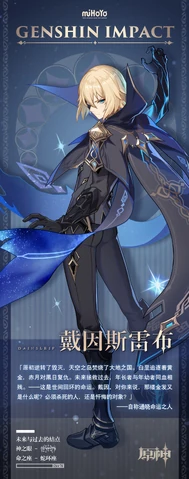

Teyvat & Unknown · Character Records
Dainsleif
Dainsleif is the former captain of Khaenri’ah’s Royal Guards, known as the Twilight Sword. He survived the Cataclysm under the Curse of Immortality, which he identifies as Ronova’s work, and continues to pursue the Abyss Order and the Five Sinners—including his older brother, Vedrfolnir.

Identity and titles
Dainsleif is a Khaenri’ahn survivor who has lived through the 500 years since the Cataclysm. The game presents him with the title Bough Keeper, while Twilight Sword was his historical title as captain of Khaenri’ah’s Royal Guards. The latter title is directly explained in Requiem of the Echoing Depths; the story has not yet set out the full scope or duties implied by Bough Keeper.
He is a first-hand witness to Khaenri’ah’s fall, but not a detached chronicler. His testimony is shaped by grief, guilt, and a long-running conflict with the Abyss Order and the Sinners. His recollections are valuable evidence, and the quests also show that memory can be manipulated or eroded, so his statements should be read in the context of what he has actually experienced.
Khaenri’ah and the Cataclysm
Dainsleif describes Khaenri’ah as a powerful human civilization that had no god of its own. Five hundred years ago, the Cataclysm destroyed it. He witnessed the fall firsthand and later calls his failure to protect his homeland the source of shame attached to the Twilight Sword title.
The game does not treat every Khaenri’ahn survivor as the same kind of being. Dainsleif remains a conscious traveler; many of his former countrymen became Hilichurls; the Black Serpent Knights retain fragments of their duty; and the Abyss Order is a separate organization built from Khaenri’ahn survivors and their descendants. These histories overlap, but the groups are not interchangeable.
The Curse of Immortality and the ring
Dainsleif’s curse does not grant a peaceful, unchanging life. He explains that the body and soul continue to erode until they are almost nonexistent; he has endured the curse while remaining conscious for centuries. In A Rekviem for the Underworld, he identifies Ronova, the Ruler of Death, as the one who imposed it on him 500 years earlier.
A Space and Time for You adds a separate mechanism: Haden says Dainsleif possesses a ring left by his older brother that continually resets his body’s condition. Haden also says that Dainsleif’s memories remain susceptible to erosion. The quests have not fully explained how the ring and the curse interact, or whether the ring affects the curse itself.
The Traveler’s sibling and their lost journey
Dainsleif tells the Traveler that he and their twin were travel partners on a painful journey to seek their fate, but they did not reach its end together. By the time of We Will Be Reunited, the twin is the leader of the Abyss Order and Dainsleif is pursuing that organization. The twin’s account of Dainsleif as an enemy and Dainsleif’s own account of their shared past reveal a deep conflict, but neither has explained every step that separated them.
In Bedtime Story, Dainsleif deliberately accepts a trap because he believes it will give him a chance to confront the twin. The twin agrees to speak with him again only after he can defeat them. A Space and Time for You shows the Traveler meeting the twin separately; it does not resolve Dainsleif’s next meeting or the former companions’ relationship.
The Abyss Order and the Loom of Fate
Dainsleif is an active opponent of the Abyss Order. In We Will Be Reunited he investigates its first Loom of Fate operation, explains its plan to combine the first Field Tiller’s eye, a Defiled Statue, and Osial’s limbs, and takes responsibility for guarding the eye. The operation described there is stopped, but later quests make clear that it was only one stage of a larger project.
In Bedtime Story and A Space and Time for You, the Loom becomes a tool for working with Ley Lines and memories. The twin uses Natlan’s Night Kingdom as a place to carry out the weaving, while an Abyss Order attack keeps the nation occupied. The result is the Atlas of the New World, which the twin describes as preserving New Khaenri’ah through the Ley Lines and its collected memories. The completed Atlas is a major success for the twin’s plan; it does not establish that Khaenri’ah has been physically restored in the ordinary world.
The Five Sinners and Dainsleif’s older brother
In Bedtime Story, Dainsleif names the Five Sinners of Khaenri’ah: Hroptatyr, the Wise; Vedrfolnir, the Visionary; Rhinedottir, Gold; Surtalogi, the Foul; and Rerir, the Rächer of Solnari. He says they accepted Abyssal power but did not defend Khaenri’ah when the Cataclysm came. He holds them responsible for abandoning their nation and says he will not forgive them.
Vedrfolnir is Dainsleif’s older brother. In A Space and Time for You, the Traveler learns that Haden, Dainsleif’s former instructor at the Knight Academy, sought to use the ring and Dainsleif’s memories to help the Loom recreate Khaenri’ah. The quests establish kinship, betrayal, and old grievances; they do not yet explain the brothers’ full history or what would make Dainsleif forgive him.
Abilities and limits shown in the quests
Dainsleif can read Khaenri’ahn writing, recognize disturbances connected to the Abyss and Ley Lines, and fight using the swordsmanship he learned from Haden as a Knight Academy instructor in Black Serpent Bladework. He has spent centuries tracking the Abyss Order and confronting its forces, including the Black Serpent Knights who were once his countrymen.
His cutscenes show him wielding blue chains and other unusual combat effects, including during the confrontation with Ronova. The game has not provided a complete explanation of their source, rules, or limits. No specific elemental Vision or element has been confirmed for him, so visual effects alone should not be labeled as one of the Seven elements.
Dainsleif’s latest direct appearance
In Chapter VII: Act IV, A Rekviem for the Underworld, Dainsleif joins Snezhnaya’s effort against Ronova. He says he came both because Ronova inflicted his curse and because he wants answers from Hroptatyr. Although he would rather confront Rhinedottir, he agrees to focus on the fight against the Ruler of Death. His cooperation is tied to the immediate threat; the quest does not make him a member of the Fatui.
Dainsleif and the Traveler help hold Ronova in battle while Pierro strikes. Afterward Dainsleif asks whether the final blow truly killed her, and the quest leaves room for her to have escaped. He later calls the outcome a historic defeat, while warning that the new era will not be peaceful. The 7.2 Archon Quest, A Yesterday Sent From Beyond, continues the wider story without a new Dainsleif appearance; his next move is unknown.
Temperament, loyalties, and current questions
Dainsleif is reserved, skeptical, and uncompromising toward the Abyss Order and the Sinners. He carries lasting guilt over failing Khaenri’ah and does not separate its history from the present danger posed by the Order. At the same time, the latest quests show that he can cooperate with people whose objectives differ from his own when a larger threat demands it. He calls the Tsaritsa the Mother of Khaenri’ah and grants her a direct audience, but this courtesy does not establish that he has joined her cause permanently.
The game has not resolved the full terms of the Curse of Immortality, the ring’s origin and limits, the meaning and duties of Bough Keeper, the final purpose of the Loom, or Dainsleif’s relationship with his twin and brother. Ronova’s defeat is also not confirmed as a death, and no quest has shown Dainsleif cured. Keep those points open rather than treating a title, a visual effect, or a character’s interpretation as a complete explanation.
This is an original CoreGG reading guide, not an official HoYoverse article or a reproduction of the game text. Source links below identify the records used so you can check the original context.
Sources & references
Check these sources for the original game text and reference trail.
- Genshin Impact Wiki · lore reference
- In-game quest recap · Bough Keeper: Dainsleif
- In-game quest transcript · We Will Be Reunited
- In-game quest transcript · Requiem of the Echoing Depths
- In-game quest transcript · Caribert
- In-game quest transcript · Bedtime Story
- In-game quest transcript · A Space and Time for You
- In-game quest transcript · A Rekviem for the Underworld